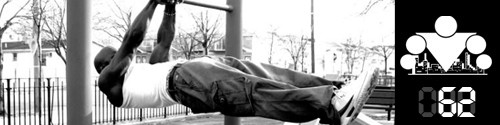
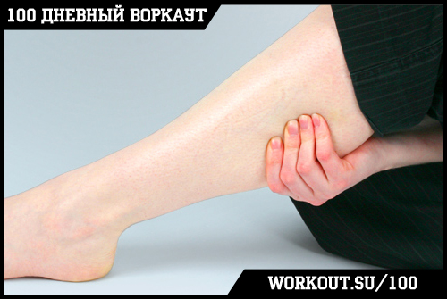

День 62. Судороги мышц

Сказать по правде, с темой сегодняшнего инфо-поста я лично впервые столкнулся, когда решил напрячь икроножную мышцу. Конкретно напрячь именно её. Одну. На левой ноге. Напряг так, что от боли упал на пол и не мог встать. Вот что такое сила воли! А если серьёзно, то хотя у меня за время тренировок и не было встреч с судорогами, но Олег @ogrudko сказал, что эта тема важная, потому что народ сталкивается, и надо бы объяснить что к чему. Сказано - сделано!

Причины
Самопроизвольное сокращение мышц, судороги, могут возникать как непосредственно во время тренировки, так и спустя некоторое время после нее. Почему это происходит:
Вариант Первый: Перенапряжение. Если судорога сводит мышцу во время тренировки, то в большинстве случаев причиной этого становится сильное перенапряжение мышцы, связанное с избыточной нагрузкой, которой она подвергалась. Работающая мышца себя слишком сильно истощила, что в конечном итоге и привело к нарушению нервной регуляции ее сократительной функции. Для того, чтобы не допускать подобного в будущем, нужно четко представлять границы допустимой нагрузки, правда, с другой стороны, их поиски сами порой требуют выхода за привычные пределы.
Вариант Второй: Недостаток веществ в клетке. Другой популярной причиной судорог становится истощение, вызванное не чрезмерной физической нагрузкой, а хроническим недостатком отдельных веществ, наличие которых в организме человека сказывается на работе мышц. В первую очередь речь идет о микроэлементах, составляющих основу водно-электролитного баланса человеческого организма и мышц в особенности – это калий, магний и натрий.
Потеря организмом этих микроэлементов – процесс естественный, происходящий во время потоотделения, но при этом требующий своевременного пополнения за счет поступления извне. Теряя жизненно важные микроэлементы, организм должен вновь и вновь восстанавливать их запасы, и если должного восстановления вовремя не произошло, то меняется характер биохимического функционирования мышечных волокон, сократительная способность которых как раз и регулируется натриево-калиевым взаимодействием на клеточном уровне.
Естественно, если одного из микроэлементов не хватает, то сокращение мышечных волокон будет происходить со сбоями, в ту или иную сторону – либо мышцы будут с силой патологически сокращаться, либо, напротив, будут излишне вялы. И то и другое состояние вполне характерно для сильно отработавших на тренировке мышц.
Зная это обстоятельство, нужно своевременно позаботиться о поступлении с пищей или напитками адекватного количества калия и натрия, причем в сбалансированном друг к другу количестве. Это тоже имеет свое значение.
Считается также, что недостаток в организме ионов кальция тоже может спровоцировать появление мышечных судорог, что становится возможным благодаря снижению порога нервно-мышечной возбудимости. Чтобы не допустить подобного развития сценария, необходимо регулярно употреблять продукты богатые кальцием, причем те из них, что содержат кальций в легкоусвояемой форме, к примеру, молочные и кисло-молочные продукты, творог, плюс ко всему питающие организм и витаминами группы В.
Вариант Третий: Дегидратация. Без достаточного количества жидкости в организме он не сможет полноценно обеспечить транспорт всех необходимых питательных веществ к клеткам (в данном случае минералов). Поэтому причина судорог может заключаться не в недостатке конкретных веществ, а в невозможности их доставки до места назначения. Это одна из причин по которым так важно следить за потреблением достаточного количества воды в течение дня.
Вариант Четвёртый: Нарушения кровообращения. Ещё одной причиной судорог могут быть проблемы с кровообращением, вызванные неправильной осанкой, формой выполнения упражнения, или другими аналогичными причинами.
Вариант Пятый: Холод. Очень низкие температуры, а так же резкие перепады из высоких температур в низкие могут стать причиной судорог.
Вариант Шестой: Индивидуальные особенности. В редких, действительно редких случаях причина может заключаться в индивидуальных особенностях человека или в особенностях его реакции на внешние раздражители (болезни/лекарства). В этом случае лучше всего проконсультироваться с врачом.
Решения
Чаще всего, когда человека сводит судорога он просто хватается за мышцу и стонет от боли. И так может продолжаться довольно долго, если не принять определенных действий. Во-первых, нужно попробовать осторожно растянуть сократившуюся мышцу (самостоятельно или с внешней помощью). Во-вторых, стоит попробовать напрячь мышцу антагониста. В-третьих, может помочь массаж вдоль всей мышцы.
После того, как судорога пройдет, следует медленно и осторожно напрягать расслаблять мышцу в полную амплитуду, чтобы избежать возникновения негативных последствий.
Профилактика
Правильная и разнообразная пища в которой присутствуют свежие фрукты или свежевыжатые соки.
Качественная разминка перед тренировкой и качественная заминка после тренировки.
Контрастный душ, так же как и баня (?) могут быть довольно эффективным средством профилактики, поскольку учат мышцы привыкать к резким сменам температуры и способствуют улучшению кровообращения.
Важное примечание: Если судороги носят систематический характер, сопровождаются отеками, тяжестью и беспричинной усталостью в мышцах, особенно в мышцах ног, и при этом привычные меры противодействия не срабатывают, есть все основания обратиться за помощью к специалистам-медикам для выяснения причин.
======> День 63. Конкуренция, как стимул к развитию